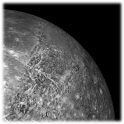

Космические аппараты, исследовавшие Меркурий
Меркурий исследовало 2 аппарата
Mapинep-10
(197З - 1975 года),
первый аппарат у Меркурия
(197З - 1975 года),
первый аппарат у Меркурия


MESSENGER
(2004 - 2015 года)
(2004 - 2015 года)

BepiColombo
(2018 год), прибытие планируется
5 декабря 2025 года
(2018 год), прибытие планируется
5 декабря 2025 года